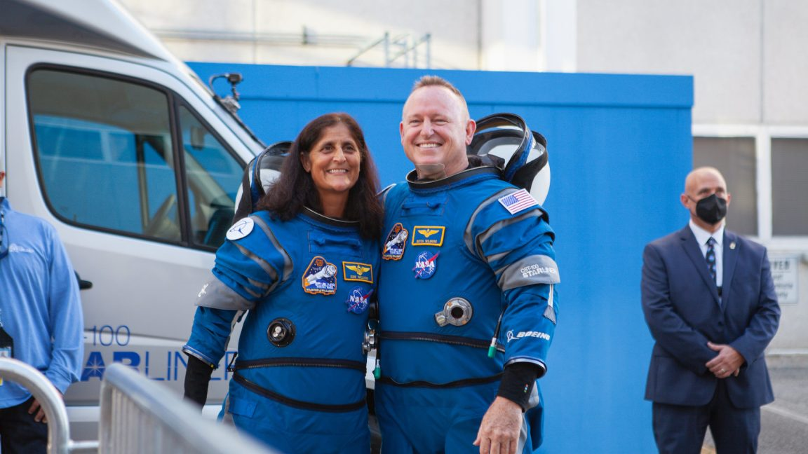

DeepSeek iOS app sends data unencrypted to ByteDance-controlled servers
A little over two weeks ago, a largely unknown China-based company named DeepSeek stunned the AI world with the release of an open source AI chatbot that had simulated reasoning capabilities that were largely on par with those from market leader OpenAI.
Read more...
ChatGPT comes to 500,000 new users in OpenAI’s largest AI education deal yet

On Tuesday, OpenAI announced plans to introduce ChatGPT to California State University's 460,000 students and 63,000 faculty members across 23 campuses, reports Reuters. The education-focused version of the AI assistant will aim to provide students with personalized tutoring and study guides, while faculty will be able to use it for administrative work.
Read more...
2025 Genesis Electrified GV70 review: Wait for the next model year
The Genesis Electrified GV70 continues to intrigue me. Together with the internal combustion engine version, it's the closest thing we'll get to a baby Bentley shooting brake, at least without being part of the Brunei royal family. It's a handsome five-door that looks almost station wagon-ish, without actually succumbing to the retail poison that body style has sadly become.
Read more...
Ransomware payments declined in 2024 despite massive. well-known hacks
For much of the past year, the trail of destruction and mayhem left behind by ransomware hackers was on full display.
Read more...
AMD promises “mainstream” 4K gaming with next-gen GPUs as current-gen GPU sales tank
AMD announced its fourth-quarter earnings yesterday, and the numbers were mostly rosy: $7.7 billion in revenue and a 51 percent profit margin, compared to $6.2 billion and 47 percent a year ago. The biggest winner was the data center division, which made $3.9 billion thanks to Epyc server processors and Instinct AI accelerators, and Ryzen CPUs are also selling well, helping the company's client segment earn $2.3 billion.
Read more...
Parrots struggle when told to do something other than mimic their peers
There have been many studies on the capability of non-human animals to mimic transitive actions—actions that have a purpose.
Read more...
22-year-old math wiz indicted for alleged DeFI hack that stole $65M
Federal prosecutors have indicted a man on charges he stole $65 million in cryptocurrency by exploiting vulnerabilities in two decentralized finance platforms and then laundering proceeds and attempting to extort swindled investors.
Read more...
NASA will swap Dragon spacecraft on the ground to return Butch and Suni sooner

NASA should soon announce a new plan for the return of two of its astronauts, Butch Wilmore and Suni Williams, to Earth as early as March 19.
Read more...